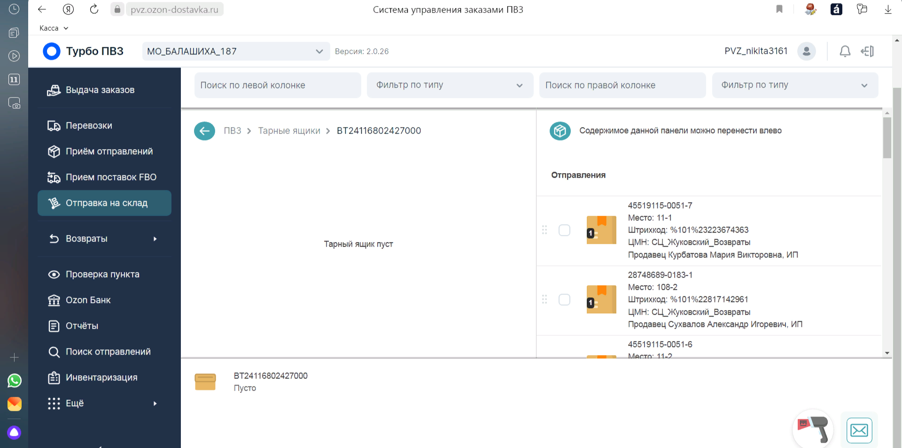

Разберем Упаковку возвратов в сейф пакеты:
Упаковка возвратов в сейф-пакеты, нужно для того, что бы переупаковать и присовить новый номер товара. Для начала перейдем во вкладку "Отправка на склад". Если у вас появилась вверху надпись "2 (может и больше) товаров без сейф-пакета", то нам нужно нажать на эту надпись.

Мы видим такую картину (скриншот ниже). Нам нужно взять этикетку и приклеить к товару, который требуется (все на скриншете). После того как приклеили, необходимо нажать кнопку напротив товара "Положить в сейф-пакет", нам выходит окно. Сканируем штрих код который наклеили и нажимаем "Упаковать".
Важно не перепутать наклейки и товар! Иначе не сможете отправить!
После того как у вас все получилось, мы видим такую картинку (ниже скришот) 
Теперь мы снова берем сканер и сканируем любой возвратный товар. В случае удачи, он перенесется на вкладку слева. Серый товар справа - нужно будет положить в другой тарный ящик с такими же действиями.
Зачастую, товар лежит в ячейках, это называется "Невыкуп". Чтобы посмотреть в какой ячейке лежит товар, можно воспользоватся "Поиском отправлений" или же будет написано в правой колонке, под номером товара ячейка.
Удачной смены, надеюсь вы все поняли :)
@ogurchik_ins